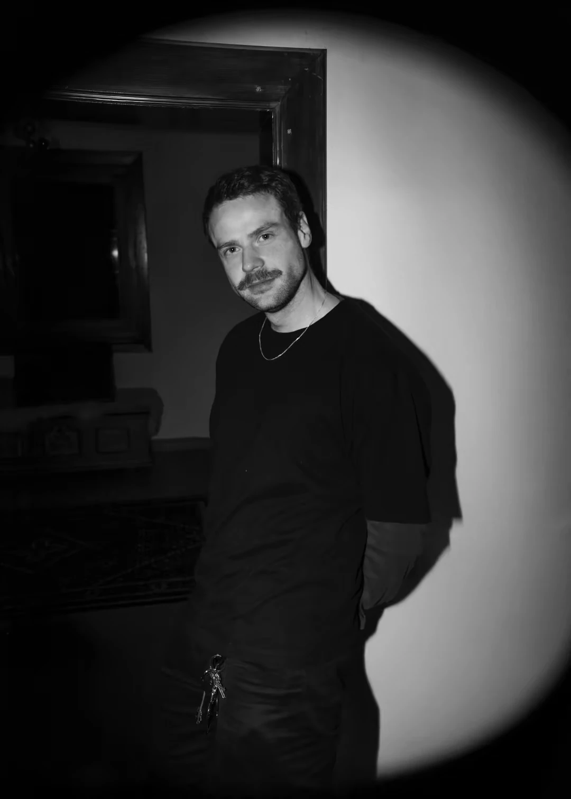
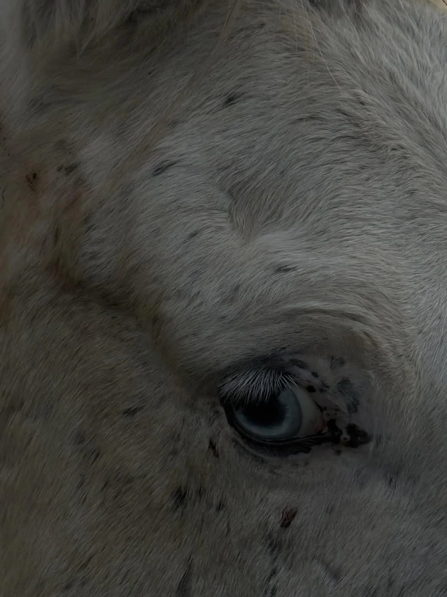
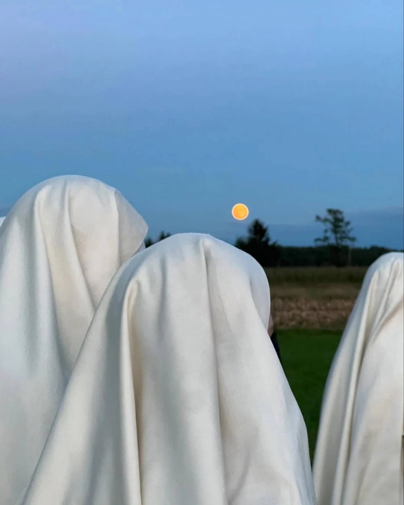
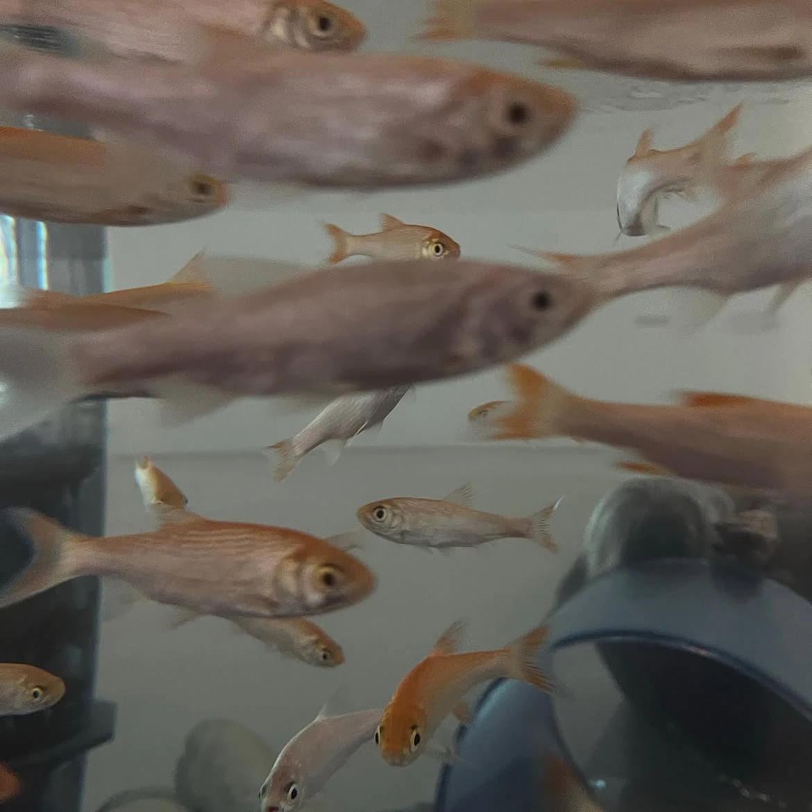
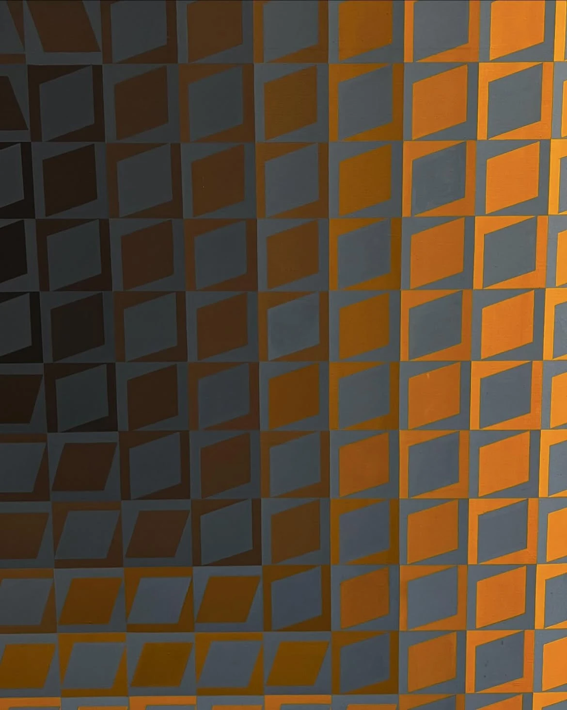
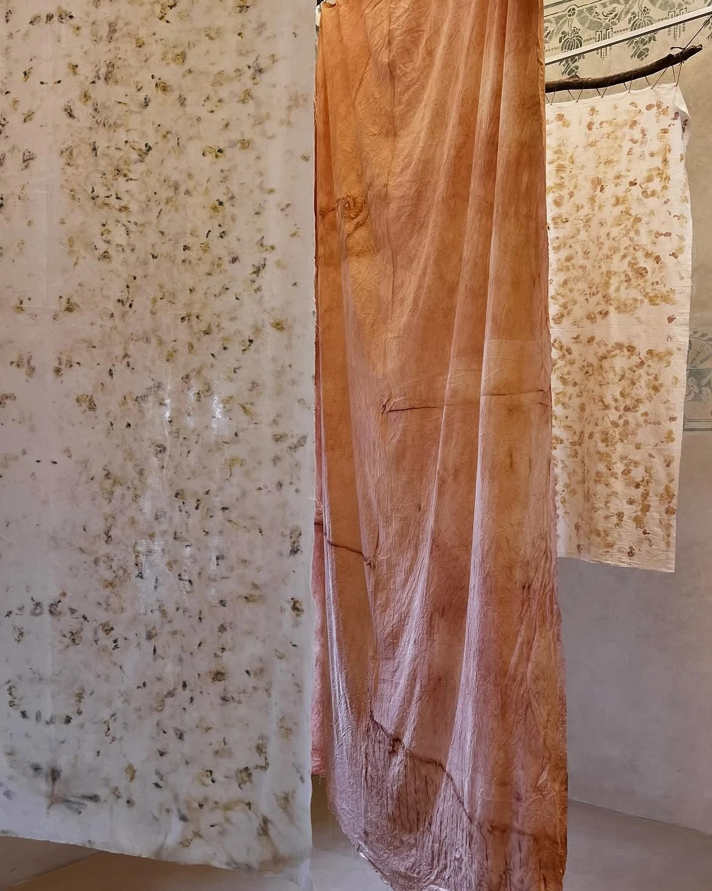
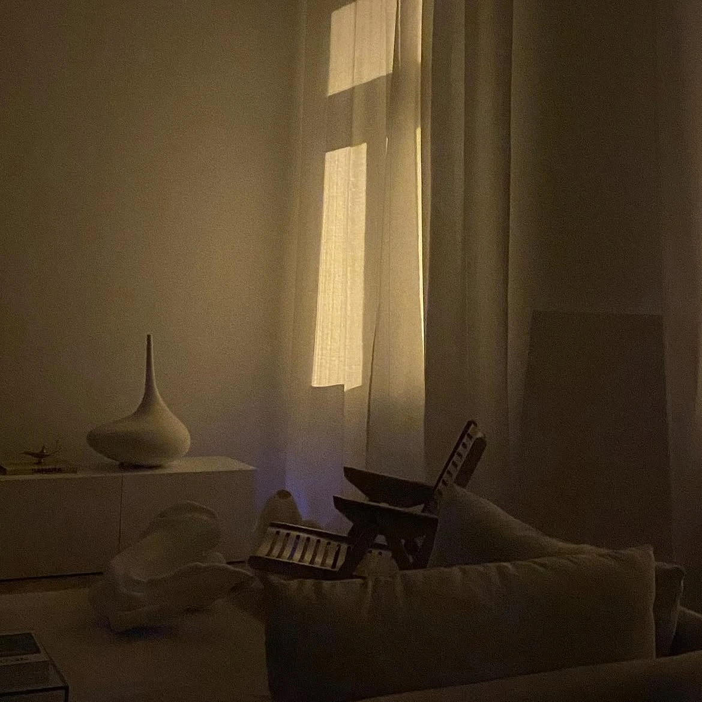
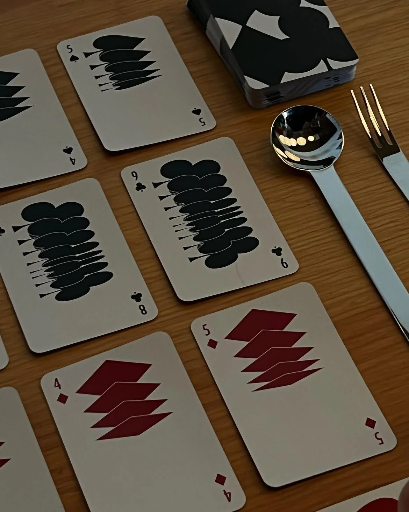
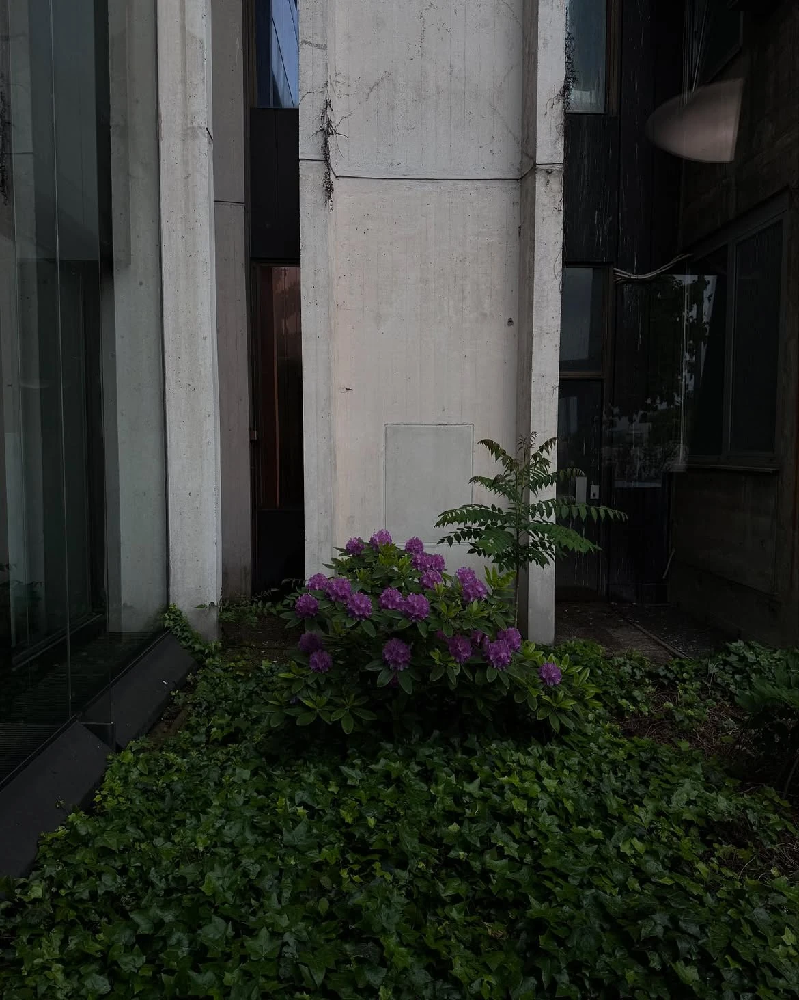
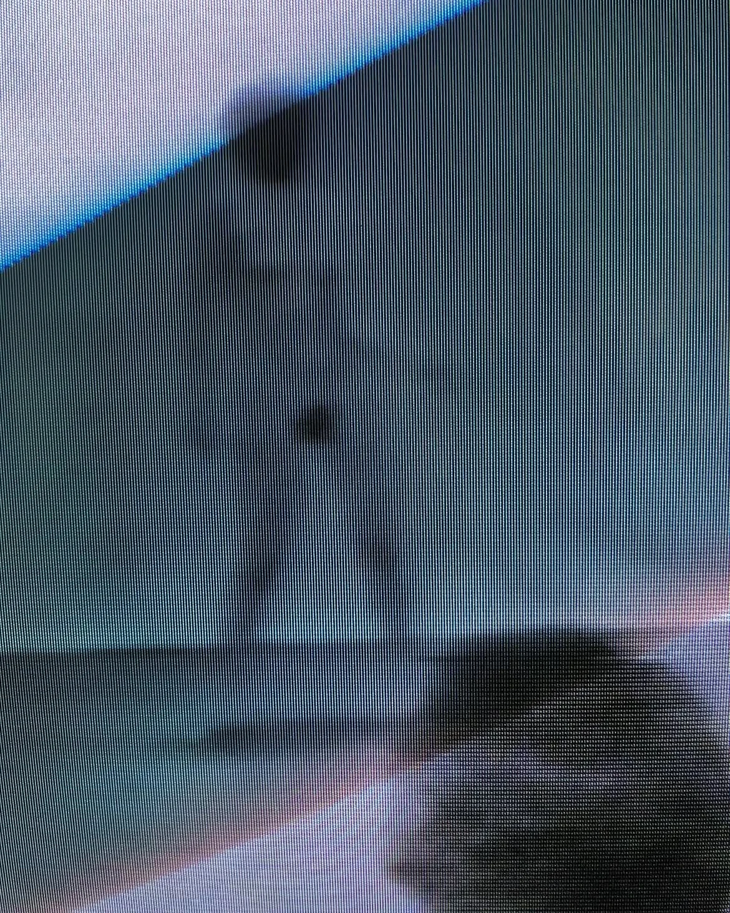

Profile
Mitja Godnic
Co-founder and partner of Top Stories, a design, communication and production studio in Ljubljana, 2018–2026. Work for the Ministry of Culture, the International Centre of Graphic Arts, and a long list of institutions and corporations across Slovenia and the region.
Trained as a journalist. Ten years reporting on music, architecture, fashion and design before moving to the other side of it — first at the Italian Trade Agency in Ljubljana, then Expo Milano, then the EU Intellectual Property Office in Alicante, where the DesignEuropa Awards ran through my hands for a full annual cycle.
I carry work the whole way: idea, art concept, execution, production, post, distribution. Knowing every step is what lets me hold a whole project in my head at once — and say early, with reasons, what it should become.

Where I'm from
I'm from a small town near Trieste, on the Karst — vineyards and olive trees, rocky ground, sea views, Mediterranean summers. I feel more Italian than Slovenian. Italian culture was strong in my family and in the region, and I grew up on Italian television, books, music and film. Rome and Milan only made it stronger. If pressed, I'd call myself Friulano before either.
I played guitar, and I'm learning piano. I used to DJ and record house music sets. I built and repaired computers, which is how I earned my first money. I was a curious child who couldn't choose, so I studied journalism — the one subject that let me be curious about several things at once. My second option was architecture.
I know a little about everything and not much in depth. What I have instead is resourcefulness, the whole picture, and the ability to see the finished thing before anyone else does.
How I work
Fast at. Execution. I find the route to a result quickly and turn things around fast — especially anything I can carry end to end myself, and anything involving digital tools. I can cut an image or a video before most people have opened the brief.
No patience for. Long meetings that produce nothing. Surface-level ideas with no research behind them. What I want instead: concrete ideas, deep thinking, real references.
The best part. The moment the pieces fall into place, the concept picks up momentum, and everyone knows exactly what to make.
Leading. Led a team of up to ten. Never wanted it bigger — the studio stayed boutique and worked almost entirely on referral. Camera crews, video editors, motion designers and graphic designers reported to me directly, alongside freelance crews.
Looking at
- Cinema. European festival cinema most weeks. My favourite film is Blow-Up, by Michelangelo Antonioni.
- No genre loyalty in music. Open to all good tunes. Most of what I find comes through NTS.
- Architecture and design books, read properly. Fiction rarely. Favourite architect Mies van der Rohe.
- Long walks, which is where the ideas actually arrive.
- Solo travel — USA, Japan, Peru, and many more to come.
- Running, gym, and tennis. Every week.
Writing
2011–2018
Ten years reporting and writing, on and off, alongside everything else. Mostly music, architecture, fashion and design — interviews, profiles, opinion. Daily television news at RTV Slovenia in 2018. I still cover the DesignEuropa Awards.
Career
- 2018–2026Top StoriesCo-founder, Partner — Executive Producer & Creative Direction · LjubljanaFounded with two colleagues from journalism, out of a demand nobody was serving: video made with a reporter's method rather than an advertiser's. Grew from production into an editorial desk for business content, relationships and process. Clients across culture, government, pharma, finance, retail, energy and EU institutions.
- 2021–2022Zemanta (Outbrain)Product Marketing Specialist · RemoteRelease communications and go-to-market alignment for a programmatic advertising platform.
- 2018RTV SloveniaJournalist & News Reporter — contract · LjubljanaDaily television news for the national broadcaster.
- 2016–2018EU Intellectual Property OfficeCommunications — DesignEuropa Awards · AlicanteThe DesignEuropa Awards are the European Union's prizes for product and industrial design, judged across the whole EU and awarded to holders of registered Community designs. I worked a full annual cycle — launch, call for entries, selection, shortlisting, and the two-day ceremony itself. It is where I learned what design looks like at institutional scale, and I still cover the awards as a journalist.
- 2015–2016Faculty of Computer & Information Science, University of LjubljanaCommunications · LjubljanaThe first time I owned all of it alone — internal and external communication, media relations, events, and the launch and delivery of the faculty's campaigns.
- 2011–2016Siol.net and Slovenian magazinesJournalist — music, architecture, fashion, design · LjubljanaBegan during my journalism degree and continued alongside everything else.
- 2015Expo Milano 2015Press Office — Slovenian Pavilion · Milan
- 2014Italian Trade Agency / Embassy of Italy in SloveniaPR & Events · LjubljanaItalian Fashion Week and Italian Cuisine Week in Slovenia.
Education
- 2019University of LjubljanaMA — Visual Communication & FilmTwo years of the degree taken on exchange at La Sapienza, Rome, studying visual communication and Italian cinema.
- 2014University of LjubljanaBA — Journalism
Recognition
- 2025Silver — Slovenian Advertising FestivalTriglav Insurance, internal communication formats
- 2025Finalist — Marketing ExcellenceTriglav Insurance
Languages
Slovenian — Native · Italian — Proficient · English — Proficient
Photographs
Ongoing. Mostly on walks, mostly on the way to something else.








